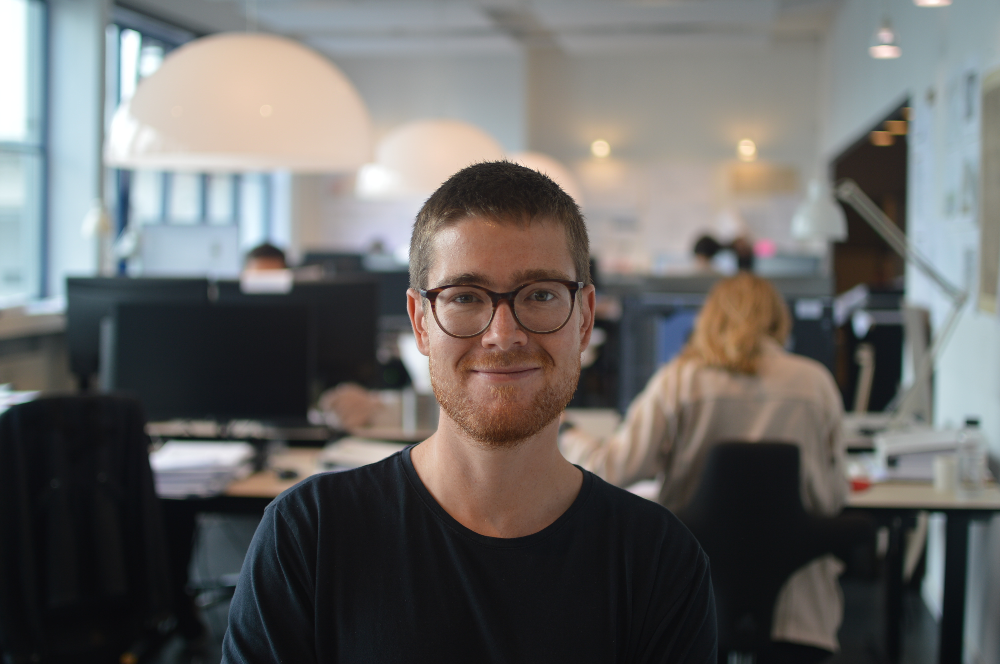

Fakta
MVDR rådgiver bygherrer og arkitektvirksomheder med udgangspunkt i en tektonisk og økologisk forståelse af arkitektur, hvor form, materialer, funktion og ansvar tænkes som en samlet helhed.
Tektonikken forstås både som en materialelogik og som en måde at træffe arkitektoniske beslutninger på. Det handler om, hvordan konstruktion, materialer og detaljering skaber sammenhæng mellem holdbarhed, brugbarhed og skønhed, og dermed tilsammen danner bygværkets æstetik og aflæselighed.
Vi arbejder med en situeret tilgang, hvor eksisterende bygninger, kulturarv, materialer og lokale forhold ses som aktive ressourcer frem for begrænsninger. Her forstås transformation, bevaring og ny anvendelse som en naturlig del af arkitekturens livscyklus. Målet er at udvikle løsninger, der både er forankret i stedet og kan tilpasses fremtidige behov.
Vores tilgang bygger samtidig på en værdisætning, hvor værdi ikke alene forstås økonomisk eller teknisk, men også kulturelt, materielt og relationelt. Bygninger betragtes som en del af større sammenhænge mellem mennesker, materialer og omgivelser, og bæredygtighed handler derfor ikke kun om at reducere ressourceforbrug, men om at skabe langtidsholdbare forbindelser mellem det byggede, det sociale og det landskabelige.
Med afsæt i vernakulær arkitektur arbejder vi for en praksis, hvor arkitektur udvikles med respekt for stedets klima, kultur og byggeskik. Det betyder en rådgivning, der søger at forene det tekniske og det kulturelle.
LCA-beregninger er ikke universelle. Metoder og antagelser varierer, og resultater skal forstås i deres kontekst og ikke sammenlignes ukritisk.
Valget af energikilde har stor betydning for bygningers samlede CO₂-aftryk og er ofte et af de mest effektive steder at reducere udledninger.
CO₂-reduktion kræver en helhedsorienteret tilgang, hvor energi, materialer og konstruktion ses i sammenhæng frem for isolerede optimeringer.
Materialevalg er afgørende. Biobaserede materialer og enkle konstruktive principper rummer et stort potentiale for markante reduktioner.
Vedligehold og reparation bør prioriteres frem for udskiftning, da det reducerer klimaaftryk og understøtter eksisterende arkitektoniske værdier.
Nedrivning har et betydeligt klimaaftryk og bør kun anvendes, når det er nødvendigt og velbegrundet.
Bevaring og klimahensyn er ikke modsætninger, men kan i mange tilfælde understøtte hinanden og skabe mere robuste løsninger.
Der er i de senere år sket et tydeligt skifte i måden, vi taler om byggeri, bevaring og ressourceforbrug på. Hvor nybyggeri tidligere ofte blev set som det naturlige udgangspunkt, handler diskussionen i dag i stigende grad om, hvorvidt vi overhovedet skal bygge nyt, eller om vi i højere grad skal arbejde med det, der allerede findes. Flere forskere peger på, at langt størstedelen af fremtidens arkitektopgaver vil bestå i transformation og omdannelse af eksisterende bygninger, og nogle argumenterer endda for, at vi allerede har opført det, der er behov for.
Samtidig er klimadagsordenen blevet en central ramme for både arkitektur og kulturarv. Det betyder, at spørgsmål om bevaring ikke længere kun handler om historie og æstetik, men også om klimaaftryk, materialeforbrug og ressourceansvar. Livscyklusvurderinger (LCA) og andre målemetoder spiller en stadig større rolle, men de rejser også nye spørgsmål: Hvordan vurderer vi værdien af det eksisterende byggeri, og hvordan afvejer vi kulturelle værdier mod klimamæssige hensyn?
Bygningskultur er i sig selv ikke statisk. Den er konstant under forandring, og bygninger ændrer sig allerede i det øjeblik, de bliver taget i brug. Det betyder, at bevaring og transformation ikke kan forstås som modsætninger, men som en del af den samme kontinuerlige proces. I den sammenhæng opstår der behov for nye måder at træffe beslutninger på, hvor både klima, kultur og brugsværdi indgår som ligeværdige hensyn.
Vi arbejder med dette gennem noget vi kalder en økologisk værdisætning, hvor værdi ikke kun forstås som noget økonomisk eller teknisk, men også som noget kulturelt, materielt og stedsspecifikt. Her ses bygninger ikke som isolerede objekter, men som en del af større sammenhænge mellem materialer, mennesker og omgivelser. Det betyder, at værdien af en bygning ikke kun ligger i dens fysiske form, men også i de relationer og den kontekst, den indgår i.
Inden for kulturarv peges der på, at værdier altid er afhængige af kontekst og fortolkning, og at det, der opfattes som værdifuldt, ændrer sig over tid. Inden for arkitekturteori understreges det samtidig, at arkitektur ikke kun er form og teknik, men også et etisk spørgsmål om, hvordan vi forholder os til verden gennem det byggede miljø. Her bliver materialer, konstruktion og detaljering ikke blot tekniske valg, men udtryk for værdier og holdninger.
Samtidig viser nyere tænkning, at skellet mellem natur og kultur ikke er så klart, som det tidligere har været antaget. Det byggede miljø må forstås som et samspil mellem mennesker, materialer og systemer, hvor alt indgår i samme kredsløb. Det betyder, at bæredygtighed ikke kun handler om at reducere forbrug, men også om at forstå de sammenhænge, vi bygger ind i verden.
I dette perspektiv bliver historiske byggeskikke og tidligere måder at bygge på ikke blot noget, der hører fortiden til, men en kilde til viden om, hvordan arkitektur kan være mere ressourcebevidst og tilpasset sin kontekst. Her var genbrug, lokal tilpasning og materialebevidsthed ofte en integreret del af praksis, ikke som strategi, men som nødvendighed.
Denne måde at tilgå hverdagsarkitektur på kan beskrives gennem to begreber og anskuelser:
1. Oikos, oversat fra græsk som "at holde hus". Begrebet danner også grundlag for forstavelsen "øko", som indgår i ord som økologi og økonomi. Økologi kan forstås som "læren om husholdning", mens økonomi er sammensat af oikos og nomos, der betyder "styring" eller "forvaltning" af husholdning.
2. Vernakulær, som kan oversættes til "hjemmehørende". Inden for arkitektur forstås det som arkitektoniske tiltag, der først og fremmest opstår ud fra funktionelle behov — eksempelvis tilpasning til lokale klimatiske og vejrmæssige forhold — men som samtidig bliver karakterskabende og en æstetisk del af bygværket. På den måde opstår en stedbundet og egnsspecifik arkitektur.
Samlet peger dette på behovet for at udvikle en mere sammenhængende forståelse af arkitektur, hvor klima, kultur og materialer ikke behandles hver for sig, men som dele af samme helhed. En tilgang, hvor værdi ikke opfattes som noget fast, men som noget, der opstår i relationer, sammenhænge og systemer.
Tegnestuens filosofi kan derfor opsummeres i fire tilgange til arkitektonisk rådgivning: Tektonik, økologisk værdisætning, Oikos og vernakulær arkitektur.

Master i Bæredygtig Bygningskulturarv